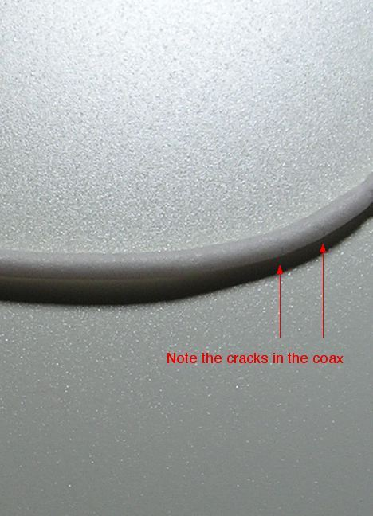
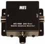
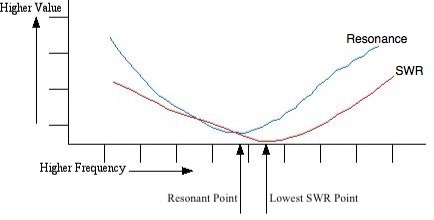

Recovered article. HTML body is from Common Crawl (text only); images came from the Sep 2022 iOS PDF:
Antenna Problems.pdf ·
12 extracted images & links ·
12 of 12 images merged inline (aspect-ratio matched). Original src preserved on each
<img> as
data-original-src.
Contents: Basics; SWR Issues; Loose Coax Connections; My Remote Antenna Controller Won't Work; Sluggish Movement; Too Many Ground Straps; It Just Won't Match; Short Leads; Shorted Leads; Secure Connections; End of Travel Issues;
Basics
You don't have to be an electrical engineer to obtain an amateur radio license. You do, however, need to have the ability to look at a specific data set, determine what the data indicates, and then look for the real-world problem that delivered the data in the first place! Unfortunately, not all of us have that ability either. This said, you can easily learn what you need to know, but there is yet another needed attribute—the requisite tools!
Far too many amateurs don't own any test gear, but at a minimum, they should own a decent SWR bridge, a 50Ω dummy load, and a DVM. More esoteric gear, such as an antenna analyzer, are even more useful. But keep in mind, that while solving any antenna problem isn't always a slam-dunk, you'll be a lot closer with the proper tools.
 Tools or no tools, almost all common antenna problems are a direct result of improper mounting. Trunk lip mounts are the prime example, because they stress both the antenna and mount when the trunk is accessed. This causes the set screws which hold them in place to loosen with each operation. Eventually, the trunk (or door) they're attached to looks like the one in right photo. Adding insult, users often sand the paint and zinc undercoat to bare metal which promotes rust and accelerates the failure rate.
Tools or no tools, almost all common antenna problems are a direct result of improper mounting. Trunk lip mounts are the prime example, because they stress both the antenna and mount when the trunk is accessed. This causes the set screws which hold them in place to loosen with each operation. Eventually, the trunk (or door) they're attached to looks like the one in right photo. Adding insult, users often sand the paint and zinc undercoat to bare metal which promotes rust and accelerates the failure rate.
Intermittent receive; fluctuating SWR, RFI, and common mode current issues; are some of the indicators of a loose mount.
☜Return☜
SWR Issues
Fluctuating or inconsistent SWR readings aren't necessarily the same malady. Fluctuating SWR is a common occurrence, although not normally noticed unless you're using a computing wattmeter. It is caused by changes in the conductivity of the surface under the vehicle, and objects is close proximity of the antenna, with trees the most common ones.
 Loose coax connections are the main cause of inconsistent SWR readings. The correct procedure for diagnosing the issue is seldom followed. The first line of defense is to replace the antenna with a dummy load. This either eliminates or points to the antenna (or mount) as the problem. If the coax is the issue, the first question should be, Who installed the connectors? If you did, that's undoubtedly the cause. It may sound like an indictment, but very few amateurs have the tools and/or knowledge to correctly install PL259s. Especially so when a reducer is required.
Loose coax connections are the main cause of inconsistent SWR readings. The correct procedure for diagnosing the issue is seldom followed. The first line of defense is to replace the antenna with a dummy load. This either eliminates or points to the antenna (or mount) as the problem. If the coax is the issue, the first question should be, Who installed the connectors? If you did, that's undoubtedly the cause. It may sound like an indictment, but very few amateurs have the tools and/or knowledge to correctly install PL259s. Especially so when a reducer is required.
☜Return☜
Loose Coax Connections

 This article explains how to properly solder PL259s. It also points out the need to use decent quality connectors. Remember! Poor solderability equates to loose connections! If you suddenly have an RFI or intermittent SWR problem, the first place to look is at the coax connections!
This article explains how to properly solder PL259s. It also points out the need to use decent quality connectors. Remember! Poor solderability equates to loose connections! If you suddenly have an RFI or intermittent SWR problem, the first place to look is at the coax connections!
Do yourself a favor, and don't buy cheap coax cable. Click on the photo at left, and look at the small cracks is the foam dielectric. Once the cracks were discovered, the burn spot, right photo, was found by pulling the coax through a soft cloth looking for a bump. Incidentally, the coax in question was in service less than 6 months. The burn occurred in an area protected from the elements, and was not subjected to stress or sunlight.
It is usually okay to use pre-made coax assemblies, but most of the time the overall length is too long. While the extra length isn't all that important at HF, it certainly is at VHF, and especially so at UHF. And remember, if you use a mount which requires running under or through a door or trunk seal, the entry point is the first place to look—think smashed coax.
☜Return☜
My Remote Antenna Controller Won't Work
The one single issue which causes remote antenna controllers not to function properly is RF getting into the logic circuitry. There are two main avenues; Via the coax cable as common mode, and through the motor (and reed switch) leads.

The left photo shows a mix 31, 3/4 inch ID split bead with 7 turns of RG8X. Note that the coax is not tightly wound, but has a diameter of about 3 inches. Any tighter and the center conductor could migrate and cause a short. This choke has an impedance (mostly resistive) of ≈2,500 ohms at 10 MHz.
The motor (and the reed switch) leads of remotely controlled HF antennas operate above RF ground. Therefore, they must be choked! With two exceptions, the manufacturers' supplied motor lead chokes (usually in the form of bare ferrite beads) are wholly inadequate for the purpose.
 The motor lead choke shown at right, consists of 13 turns of Nylon-insulated, #18 wire. The impedance of this choke is ≈10kΩ at 10 MHz, and is adequate for most installations.
The motor lead choke shown at right, consists of 13 turns of Nylon-insulated, #18 wire. The impedance of this choke is ≈10kΩ at 10 MHz, and is adequate for most installations.
These chokes must be as close to the antenna as possible, which negates mounting them inside the vehicle, or next to the controller. Remember! All of the wire before the choke is part of the antenna, and must be kept outside the vehicle! If you do not, RF can be induced into the vehicle's wiring, causing great grief and frustration. Again, this article explains how to properly wind the chokes. There are no substitutes, or work arounds for this choke. None! And no, 4 or 5 turns is not enough, even though the controller may appear to work passably!
Incidentally, there is no benefit in using coax larger than RG8X, even if you run high power. This is true because the difference in loss between 10 feet of RG8, and 10 feet of RG8x (an average mobile installation length), is a fraction of a dB. And, there is another good reason too. In order to duplicate the aforementioned common mode choke when using RG213-sized coax (one turn beads), would require 49 separate beads; about $250 worth! And do not use any type of coax with a solid center conductor, as sooner or later the center conductor will fail due to vibration stresses.
Installing motor lead chokes may require that the factory power connector be cut off and replaced. If you're reluctant to do this up front during installation, remember to leave yourself enough cable to rework the installation later when you discover you should have cut the connector off in the first place. Further, factory cables are usually covered with an outer vinyl sheath which will need to be removed. Contrary to popular belief, modifying factory cables, and connectors is not the end of the world!
As alluded to above, ground losses vary a lot from location to location. If you're using an automatic antenna controller, and you set the SWR threshold too low at one location (like your steel re-enforced driveway), your controller might not detect a low enough dip, and will continue to run past the SWR set point. This can occur even though the controller might incorporate automatic SWR threshold settings. The solution is to set the SWR threshold no lower than 1.5:1, and occasionally slightly higher. Again, this assumes the antenna is correctly matched!
☜Return☜
Sluggish Movement
Rule number one for any screwdriver owner: Never lubricate the antenna's coil! Any compound, oil, grease, spray, especially WD40, applied to the coil assembly will attract road debris (mainly metallic brake dust), dirt, moisture, and other contaminants. Doing so will cause arcing between coil turns, with predictable results! While lubrication might speed up the movement process at first, sooner or later, the problem will become a sticky, non operable, mess!
With one known exception, remotely-controlled HF mobile antennas incorporate a 1/4x20 threaded rod which is turned by a reversible DC motor. This means the motor's output shaft must turn 20 times to move the coil assembly (or shorting bar) 1 inch. The motor's nominal RPM at its rated voltage (not necessarily 12 vdc), the applied voltage, the ratio of the reduction gearing, and the overall length of the coil assembly, all effect the length of time it takes the antenna's coil to transverse its travel length. Even with a good, stiff 14 vdc (engine running), tuning from 80 to 10 meters may take as long as 60 seconds or a bit more. Models with 160 meter coverage might take as long as 2 minutes. It should also be noted, that cold weather can stiffen up the works, which relates to longer tuning times. This raises the question; how long it too long? With some fear of being evasive, that depends. To answer the question, let's look at a few scenarios which can cause extended transverse times.
All automatic antenna controllers (they're really not tuners) have some form of current detection, typically by measuring the voltage drop across a low-value resistor. If the supply voltage is low and/or the resistance in the motor lead wiring is excessive, the motor will run somewhat slower than it would if supply voltage were directly applied. In other words, they are dependent on the supply voltage being stable. To put this into perspective, if the supply voltage to the controller is less than ≈12 vdc (with the engine running), you need to rethink your wiring scenario, or buy a better controller! By the way, excessive voltage drop is the main reason antenna controllers shouldn't be powered via a transceiver port.
Some amateurs feel that isolating the power to their transceiver and/or amplifier is a way to eliminate all matter of RFI, ground loops, common mode current, poor installation techniques, and other mobile operating problems. It isn't! One thing it does do, is reduce the voltage applied to the antenna's motor! Remember, the nominal resting voltage of an SLI battery is about 12.2, but may be slightly higher in some AGM battery types. If you place a 10 amp load on the battery (≈30 watt tuning carrier), the voltage might drop below 11.5 at the antenna (voltage drop in the wire, and current detecting resistance). This will cause most antennas to slow down at lot! As a result, the setup procedure, and tuning should always be done with the engine running.
Lastly, some screwdriver antennas use a Polyfuse® to protect the motor during stall conditions. Operating during cold weather may increase the running current sufficiently enough to cause the Polyfuse® to open prematurely thus stopping the motor. A Polyfuse® will typically reset itself in about 30 seconds.
☜Return☜
Too Many Ground Straps
Remember this: Any ground strap longer than 10 inches, is too long!
The usual call-for-help conversation starts out with these words; "I grounded the antenna." If that were true, it wouldn't work! Obviously, they're referring to the antenna's mount. The second part of their conversation includes; "I grounded the radio." The radio is already grounded through its power cable. These statements point out an unfortunate truth; Far too many amateurs confuse the need for a DC ground with the need for a ground plane. As a result, they often end up creating a ground loop, which they assume is an RFI problem. Here's how to avoid this scenario.
First, if the antenna is properly mounted, no further grounding, strapping, scraping to bare metal, or connections are necessary. To be sure, there needs to be a return for the coax shield. However, that's covered under the words, properly mounted. Bonding is also an important undertaking, but it shouldn't be a work-around for improper mounting. Running ground strap hither and yon to the chassis and/or body of the vehicle shouldn't be required, and may actually cause a ground loop to occur. To reiterate; improper bonding, such as running a ground strap from an antenna mount directly to the frame, can exacerbate a common mode and/or ground loop and/or RFI issue. If you do not understand this fact, reread the bonding article.
Here's a good rule of thumb with respect to grounding antenna mounts, and radio chassis. If a ground strap fixed, reduced, or eliminated an RFI problem, then something else in the installation was amiss. Fix it, don't patch it! Remember too, the shield of the coax needs to be consistent with the start of the ground plane. If you read this section of the Antenna Mounting article, you'll have a better idea of why this is such an important attribute.
☜Return☜
It Just Won't Match

Everything you need to know to match an HF mobile antenna is in the Antenna Matching, and Antenna Coil Adjustment articles. Since you have to know the exact resonant frequency of the antenna while you're in the process of adjusting a shunt matching coil (you cannot use an SWR bridge). Rather, you'll need an antenna analyzer or VNA (Vector Network Analyzer). Further, the articles point out that it is much preferred to use a home brew shunt matching coil, rather than a commercial one like the MFJ-908 shown. Changing the shunt coil's value isn't necessary once it is properly adjusted. However, antennas covering 160 meters may require a switched inductor as mentioned in the articles.

The resonant frequency is when the reactive element (X), equals zero! It is not the lowest SWR. The only time the two will coincide is when the characteristic impedance of the antenna equals that of the SWR bridge, and the coax feeding it (≈50 Ω). Consider this; An unmatched HF mobile antenna, of reasonable quality, will have a measured input impedance of ≈25 ohms at resonance, and will therefore exhibit a 2:1 SWR. However, it is possible to move the transmit frequency and get a lower reading, but the antenna is no longer resonant! This points out the need for an impedance measuring device, not an SWR bridge!
Antenna manufacturers often tell customers, to cut their coax feed lines to a specific length in order to achieve a good match. All this does is mask the problem by moving the SWR node to another part of the feed line. While this might work in some cases, it won't fool most of the automatic controllers. The question remains, how long should the coax feed line be? The answer is, long enough to stretch from the antenna, to the radio in question, with enough left over to wind a 6 or 7 turn common mode choke. This means most preassembled coax cables will need to be shortened. If that is the case, read the coax article.
☜Return☜
Short Leads
Unfortunately, antenna manufacturers don't provide enough control lead length, or they have proprietary connectors. As a result, you have to splice the leads in order to attached the RF choke at the base of the antenna where they must be located. Most owners are reluctant to do so for warranty issues. In some cases, you can remove the antenna's base plug and motor assembly, and replace the factory wiring. However, at least four manufacturers pop-rivet their motor/reed switch assemblies to the inside of the mast making this difficult if not impossible.
Here's a suggestion. Carefully cut the existing wires close to the base of the antenna leaving about 2 inches. Attach a male Molex connector (2 or 4 pin as required), or use Anderson Power Pole connectors. When you wind your choke(s), use mating connectors to extend the leads. This makes antenna removal easier too.
 Resistor color codes are a very good example of industry standards. Standards extend to DC motors too. When the polarity is observed (positive on + and negative on -), the motor rotation will be clockwise with respect to the shaft end. For small DC motors, the positive is always red, and the negative always black. However, not all motors come with leads, or have a specific color which may vary between manufacturers. At least 3 use whatever wire they have on hand, thus two otherwise identical antennas may be wired with different colors. So, before you mount your antenna, it is best to check it out on the bench to make sure it gets wired correctly. Just be very careful not to apply DC power to the reed switch!
Resistor color codes are a very good example of industry standards. Standards extend to DC motors too. When the polarity is observed (positive on + and negative on -), the motor rotation will be clockwise with respect to the shaft end. For small DC motors, the positive is always red, and the negative always black. However, not all motors come with leads, or have a specific color which may vary between manufacturers. At least 3 use whatever wire they have on hand, thus two otherwise identical antennas may be wired with different colors. So, before you mount your antenna, it is best to check it out on the bench to make sure it gets wired correctly. Just be very careful not to apply DC power to the reed switch!
Recommending replacing factory connections with Molex® or Power Pole® connectors is often met with disdain. The usually basis is that the connectors are exposed to the weather. That's a fact, but they do dry out. Those rubber ones aren't as waterproof as you might think. Once the moisture seeps in, it stays! This eventually causes the connections to rust or corrode with obvious results.
If you use Power Pole® connectors, don't use black and red ones—save those for power connections. Instead, select two of the other 8 colors they come in.
☜Return☜
Shorted Leads
 The easiest way to check for shorts (or opens), whether they be internal, or external, is simply to measure the resistance at the controller end of the antenna motor feed line with a DVM or VOM. There should be no connection between either lead, and chassis ground. The resistance across the leads will typically be between 4Ω, and 15Ω, depending on the make, and model. Obviously, if they are open or shorted, you have a wiring problem which needs to be traced.
The easiest way to check for shorts (or opens), whether they be internal, or external, is simply to measure the resistance at the controller end of the antenna motor feed line with a DVM or VOM. There should be no connection between either lead, and chassis ground. The resistance across the leads will typically be between 4Ω, and 15Ω, depending on the make, and model. Obviously, if they are open or shorted, you have a wiring problem which needs to be traced.
While the occurrence of an internal shorted antenna lead is rare, it occurs often enough to be of concern. When you first unpack your antenna carefully look over the leads where they exit the antenna base structure. Look for any breaks, cuts, or abrasions in the leads. Check for any continuity between each lead and the mast of the antenna; there shouldn't be any! If there is, call your supplier before installation begins.
Not all leads are as well protected with heat shrink or other insulating material. On many popular brands, the antenna structure where the leads exit is also very sharp. Note the nick in the white wire in the right photo (click for larger view). This nick was caused by the sharp edge at the bottom of the mast (it was pulled further from the base after the short was discovered). Further note, there is no protective sleeve around the leads coming out of the Ameritron SDA-100 shown. If you have the wherewithal, add a sleeve as a preventive measure.
After you install your antenna, you should repeat the continuity check. It pays to remember an important point. If any of the leads are shorted to the mast of the antenna, properly RF choked or not, transmitting will destroy what ever controller is attached.
☜Return☜
Secure Connections
Referring to the photo of the SDA-100 above-right; at the very bottom of the photo are the connections for the coax feed. The supplied shunt coil (not shown) connects across these connections. The hole for the bottom connection (at right) is drilled and threaded clear through the base insulator. Supposedly, this ground connection provides a secure return for the shield of the coax. It doesn't. Since it is very important to provide a secure connection between the coax shield and the ground plane, a short, braided jumper should be installed between the screw and the mounting mast (plate).
The upper screw (barely shown in the photo) is also drilled and threaded clear through the base insulator. If you bottom out this screw, you short out the coax via the mounting mast with obvious results. Although the owners manual mentions this, of the four examples I've seen, three had this problem. It pays to read the instructions before installation begins!
 These aforementioned problems are not unique to the SDA-100, as several other popular models are nearly identical, or at least have identical problems. That is to say, the connections between the antenna, the shunt matching coil, and the coax feeding them, can become loose. This can cause all sorts of problems, both minor and major.
These aforementioned problems are not unique to the SDA-100, as several other popular models are nearly identical, or at least have identical problems. That is to say, the connections between the antenna, the shunt matching coil, and the coax feeding them, can become loose. This can cause all sorts of problems, both minor and major.
Another problem area is the connection where the whip screws in. Even when short whips are used, this connection is the one that receives the most stress. If you're experiencing some intermittent receive, this is the first place to look. If you use a quick disconnect for the whip, you should use one that is not spring loaded. One of the best ones come from Breedlove Machine Shop. They also make a combination fold over/QD that is quite clever in design.
A few additional comments about the SDA-100. For the money, it is a fair performer. Except for the pop rivets holding in the motor assembly, it appears well constructed. It does have a couple of drawbacks. The antenna's base plug accepts a one inch pipe thread, which is a better mounting method than the U-bracket some similar antennas use. However, this fact leads some folks to mount the antenna atop a long pipe stub which adds a lot of ground loss, and makes matching difficult.
☜Return☜
End of Travel Issues
As noted above, some manufacturers incorporate a Polyfuse® to limit the maximum current which can be drawn by the motor. This protects the motor from burnout. When the antenna is moved to one end or the other, the typical run current (250 to 350 mils but may be higher). At stall the current more than doubles, and maybe as high as 2 amps (2,000 mils)! In at least one case, stall current exceeds 8 amps! To the uninitiated, this fact can cause a variety of hard-to-solve (and fix) problems.
Automatic antenna controllers often have a park feature, or require the antenna to be parked during the setup procedure. Depending on the make and model, the motor current required to move the antenna to its end of travel may be more than its running current, but less than stall current. As a result, once you move to one end, you can't get it to move in the opposite direction. If your antenna incorporates a Polyfuse®, and this happens to you, just wait a minute for the Polyfuse® to cool, and try again. In rare cases it may become necessary to use a bench supply to unstick the antenna.
Another end of travel problem is hidden in the first paragraph, and you should take heed with the following. Literally dozens of manual controllers, and several of the automatic ones, draw power from the radio's accessory socket. With one known exception, the maximum total current draw from these ports is 1 amp! What's more, the voltage drop through the radio may exacerbate the end of travel problem, but that's not the worst that can happen.
Most miniaturized radios have an internal fuse. The Icom IC-706 has a 4 amp ATC fuse, and the IC-7000/7100 has a 5 amp one. Yaesu models use a surface mounted 3.5 amp fuse. If a short develops, a circuit trace feeding the accessory port(s) typically fails before the fuse opens! The best way to protect your investment, is to use a controller that uses a separate circuit to feed your antenna's motor, or rewire your unit so it does.
Internally, antenna controllers usually use a sub-ohm resistor in series with the motor leads. The voltage drop across this resistor is used to detect the motor run and/or the stall current. At least one commercial controller uses a jumper to adjust the resistance value, rather than change a CPU parameter. As a result, controllers designed this way don't work well with with antennas drawing less than 600 to 700 mils at stall, as they further exacerbate the end of travel stick problem.
Several screwdriver makes use an interrupted thread to protect the motor at the end of travel. Depending on how this is done, the antenna may not reverse direction. While it is a simple matter to manually reengage the threads, it requires one to pull over and stop. The best fix is to avoid buying one in the first place!
☜Return☜
Home
 Tools or no tools, almost all common antenna problems are a direct result of improper mounting. Trunk lip mounts are the prime example, because they stress both the antenna and mount when the trunk is accessed. This causes the set screws which hold them in place to loosen with each operation. Eventually, the trunk (or door) they're attached to looks like the one in right photo. Adding insult, users often sand the paint and zinc undercoat to bare metal which promotes rust and accelerates the failure rate.
Tools or no tools, almost all common antenna problems are a direct result of improper mounting. Trunk lip mounts are the prime example, because they stress both the antenna and mount when the trunk is accessed. This causes the set screws which hold them in place to loosen with each operation. Eventually, the trunk (or door) they're attached to looks like the one in right photo. Adding insult, users often sand the paint and zinc undercoat to bare metal which promotes rust and accelerates the failure rate. 


{kind=link}
{kind=link}
{kind=link}